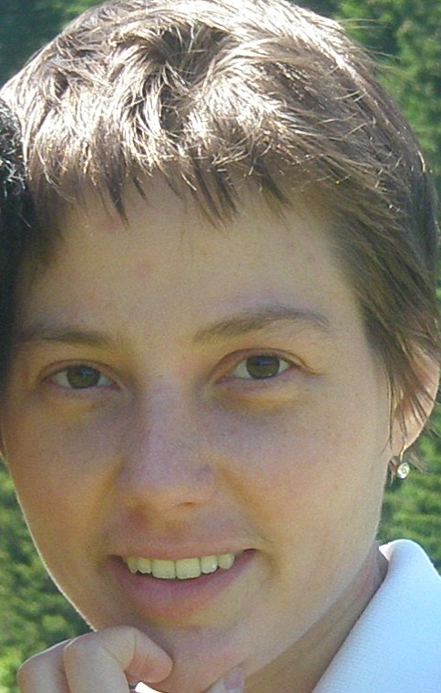

|
 |
office mailing address:
email: karola ~at~ math.cornell.edu Research Cornell Discrete Geometry and Combinatorics Seminar |
I am a Professor in the Cornell Department of Mathematics. My work is partially supported by a National Science Foundation Grant (DMS-2348676). I study mathematical objects arising in algebra, combinatorics and topology via polytopes.
I received my Ph.D. from MIT in 2010 under the direction of Richard Stanley. Here's my CV.